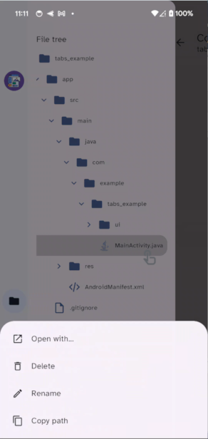
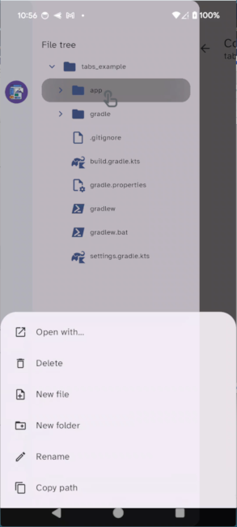

To display and navigate the file tree for the current project, follow these steps:
1.In an open project, choose one of the following:
•Swipe from the left side of the screen to the right
•Tap the three-bar menu icon at the top left of the screen.
The file tree for the current project is displayed.
2.To open a closed folder, tap the folder. The > at the left will change to ˅ and the contents of the folder is displayed.
3.To close an open folder, tap the folder. The ˅ will change to > and the folder will be closed. If you close a folder that contains open folders, all folders in the path will be closed.
Using the long-press menu
To display file tree menu options, long-press the file name or folder name.
 |
 NOTE: Code on the Go does not support the Open with... command for folders. |
The following table explains how to navigate the file tree.
To do this |
Long-press this, then... |
Follow these steps |
|
|---|---|---|---|
Create a new file (and optional folders) |
Folder in which you want to create the new file |
1.Tap New file. The New file dialog box is displayed. 2.In the File name field, enter the name of the file. 3.If you want to create one or more new folders in the selected location as well as the new file, enter the path name in the field. After every new folder name, enter the / character.
4.Tap Create. The file and any folders you specified are created within the folder you selected. |
|
Create a new folder (and optional subfolders) |
Folder in which you want to create the new folder |
1.Tap New folder. The New folder dialog box is displayed. 2.In the Folder name field, enter the name of the new folder. To create one or more subfolders in the current location, separate each with the / character.
3.Tap Create. The folder(s) will be created. |
|
Rename the selected folder |
Folder to rename |
1.Tap Rename. The dialog box is displayed. 2.In the name field, enter the new name of the folder. 3.Tape Rename. The folder will be renamed. |
|
Rename the selected file |
File to rename |
1.Tap Rename. The Rename dialog box is displayed. 2.In the name field, enter the new name of the file.
3.Tap Rename. The file will be renamed. |
|
Copy the complete file path to the selected item to paste somewhere else |
Folder or file whose path you want to copy |
1.Tap Copy path. •If you selected a folder, the full directory path to the folder will be copied to the device's memory. •If you selected a file, the full directory path to the file will be copied to the device's memory. 2.Navigate to the place where you want to add the file path. For example, to enter the path in a file that's open in the text editor, display that file. 3.Paste the text in the desired location. •Tap the place where you want to enter the path. A clipboard icon for the text is displayed above the keyboard. •Tap the clipboard. The directory path to the target folder or file will be pasted in that location. |
|
Delete a folder |
Folder to delete |
1.Tap Delete. A confirmation box is displayed. 2.Tap Confirm. The folder and any files or subfolders it contains are deleted. |
|
Delete a file |
File to delete |
1.Tap Delete. A confirmation box is displayed. 2.Tap Confirm. The file is deleted. |